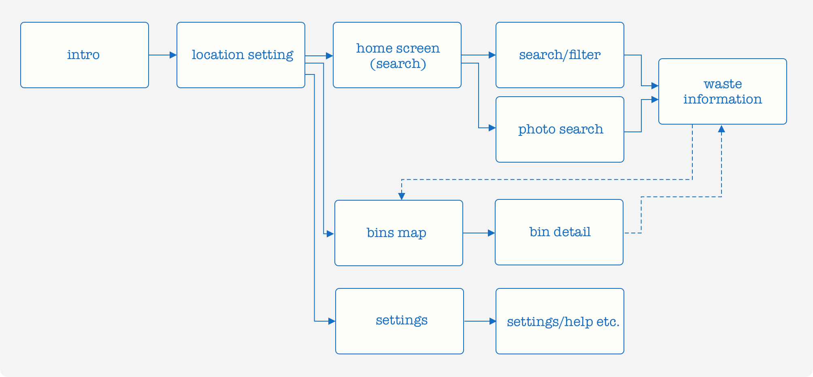
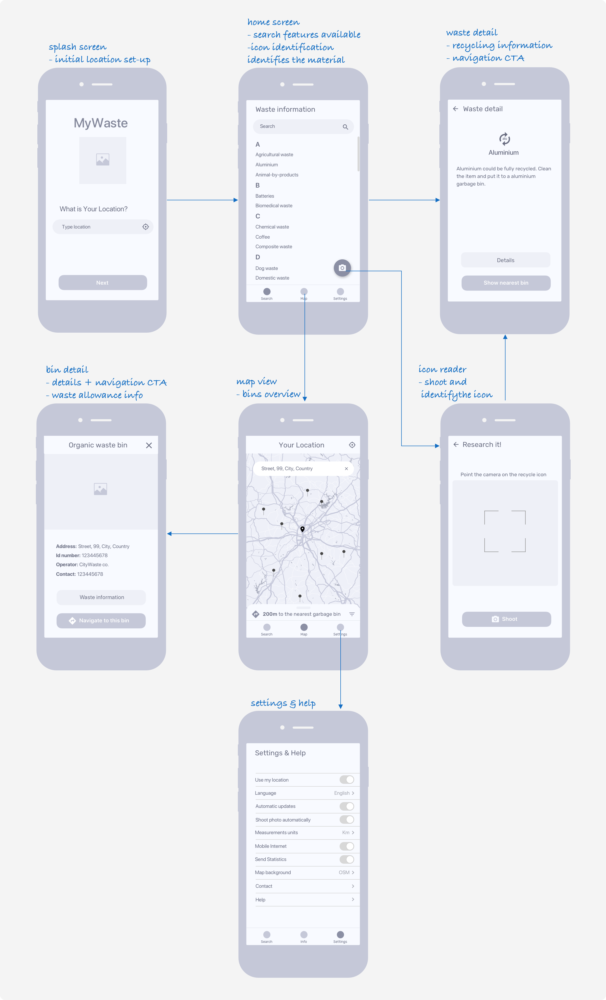

There are plenty of websites on the Czech Internet explaining waste separation issues and even more sites where local authorities or non-profit organizations inform people about garbage bins availability. However, there is neither a website nor application where anyone can find all the information on one place. The concept of this application deals with the outlined problem and helps users to easily get all available information.
The Challenge
There are many waste types that can be recycled and the support by local authorities have been increasing in recent years (for example, special bins for waste oils and fats must be available in the upcoming year so people can recycle them). However, there is a lack of information which limits people in even more effective waste segmentation, even if they are highly motivated to do so. My goal for this project is to analyze the problem and suggest a high level solution which might deal with it. The idea was inspired by a few recent news articles (see
[1],
[2]).
Research and insights
According to a lot of research, which served as an early insight from the field, more than 75% of Czechs regularly sort the main waste types (this number has been rapidly increasing in recent years). However, the availability of garbage bins for some more specific trash is generally not so good and therefore the recycling rate is much lower (for example, only around 20% of people sort aluminium). There is also not as much information about how to recycle some particular waste types properly, as information sources are not well managed and people cannot access them easily.
Based on the above mentioned inputs, I conducted another exploratory research to get a better insight of people’s needs in terms of waste separation and garbage bins availability. The main goal of this research was to better know (a) why people sort only a few specific waste types and (b) what is their motivation to do so.
Methods and approach
I conducted a moderated interview with 4 people (I contacted only relatives and friends for this purpose) about their motivations and needs related to waste and its separation. The interview was focused on describing their typical waste sorting habits and activities. I tried to find out any typical patterns people use in waste sorting and information they know about it.
If there was more time for the research phase I would definitely run an online survey collecting quntitative data about the above specified questions. This could give me much better and detailed insight in people’s motivation and daily activity related to waste sorting.
Jobs To Be Done
The research findings gave me a relatively clear insight for the next phase of my design process. Most importantly, the findings somehow followed the facts outlined in the mentioned research studies - I just got a better idea of how people recycle waste and why are they motivated to do so.
Typically, they tend to sort the main waste types (paper, glass etc.) as they are used to it, and moreover the bins for these waste types are well accessible. In contrast, they don't think so much about recycling the rest because they are not sure which type does it belong to. Accessibility of other garbage bins (other than the common ones) is a big issue for them as they either don't know where to find them or they even don't know they exist.
Based on the findings above I set the most relevant jobs to be done to solve the defined issues. Such formulated job flows helped me to conceptualize the typical activities users need to do to fulfill their goals. It is an important part of my design process which helps me designing user flows and information architecture of the app or service. The two following jobs to be done were specified:
-
When I want to throw my trash away I want to know how to sort it properly (i. e. identify the material and get to know in which garbage bin am I supposed to throw it away).
-
When my trash bin is full I want to know the locations/availability of municipal garbage bins so I can get it there immediately.
People simply deal with the two most typical problems: they sort only the well known waste types and they are not familiar with the locations of some more specific waste types bins (which are still very rare and their locations have been changing a lot). That is the reason they tend to throw away the non-typical waste together with the mixed waste. Although their motivation to sort everything is relatively high, they simply miss the information how and where can they do so.
Design solution
The research helped me to start thinking of the solution that would deal with the set goals in the best way. The solution must offer people an easy approach to up-to-date information about waste separation on a single place and whenever they need.
The product should help users in both sorting their waste and navigate them to the nearest available garbage bins. This could resolve all problems of the existing solutions (i. e. tons of websites and booklets information that are not available everywhere and everytime).The most flexible solution, fitting all the given users' needs, is a simple mobile app gathering all the functionalities on a single place.
Building up the structure and flow
I started sketching the structure of the app so it contains all must-have features (the structure and app flow below is the first iteration - at this moment, I would discuss this version with all stakeholders to get an initial feedback before going any further). The main structure consists of three branches which offer users easily access all needed information, such as waste type identification (including detailed information) and garbage bins locations and details.

The main idea of the app is helping users to: (1) identify an unknown waste type so it can be recycled, (2) find the nearest/available garbage bins for various waste types and (3) offer users all relevant information related to waste separation on a single place. The main structure of the app follows these goals.
The Search section offers user either search a product using a search field or identify the waste material by waste type icon (visually, by shooting it with a phone camera) - both methods lead to a waste information screen where the user easily finds clear information about recycling this particular trash.
The garbage bins location overview (spatially visualized on a map) - was designed with a well known patterns so it would be easily usable. All available bins (of all types) are clearly shown on a map and user can filter them by their types. Users can also use a navigation to a nereast or desired bin.
The settings section offers set up of the app preferences, as well as accessing the Help section.
Wireframing UI concepts
Once the structure was finalized, I went on designing the corresponding UI concepts (arrangement of UI components, content and interactions). The wireframes below show the initial concept for all the main elements in the flow. The goal of this phase was to kick off the initial UI design in an easy way and using simple and intuitive interactions.
This would be the right moment for the initial usability test with a few users for getting a quick feedback (an easy interactive prototype testing the structure and interaction design of the app).

Summary & comments
The goal of this project was to present my design process (high level problem solution). I would like to sum up some aspects that might be missing in the process described above.
- The initial research would be normally much deeper - for example, I would learn more about existing solutions in Czechia and abroad (if there are some) and analyze all relevant data sources and other technical limitations
- All the described phases were shortened and simplified (for example, the research phase included only a narrow user group etc.)
- I would normally iterate more concepts and design versions and discuss them regularly with all stakeholders
- The solution does not cover the whole relevant user journey - this could probably start on the existing websites /or booklets) with promoting the app as people usually access the information on these places
- I would be more than happy to discuss the solution and answer your question in detail!
Source (Czech local news):
[1] https://translate.google.cz/translate?sl=auto&tl=en&u=https%3A%2F%2Fwww.tyden.cz%2Frubriky%2Fdomaci%2Fvetsina-cechu-smysli-ekologicky-jejich-pocet-roste_509284.html
[2] https://translate.google.cz/translate?sl=auto&tl=en&u=https%3A%2F%2Fwww.idnes.cz%2Fzlin%2Fzpravy%2Fpopelnice-tuky-kanalizace-zlinsky-kraj-uherske-hradiste.A190105_448900_zlin-zpravy_ras